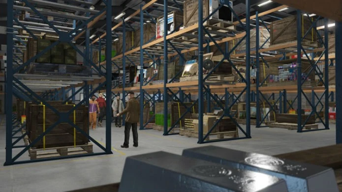

Deposito de Muamba
Os armazéns são usados para armazenar muamba, é necessário um galpão de muamba para iniciar Missões Especiais de Compra e Venda de Carga. O jogador deve ser o CEO de uma Organização e possuir uma Escritório para comprar um Armazém através do Rede de Carga Especial SecuroServ, que pode ser acessado no computador na mesa do Escritório.
O Armazém aparece com prateleiras comerciais para guardar caixas. O prédio pode ser invadido ocasionalmente, e a Organização terá que proteger os bens de serem roubados. O estoque pode ser monitorado no portal principal do Escritório da Organização
Metodo de Obter:
Existem três tipos diferentes de Armazéns: Pequeno, Médio e Grande. Armazéns pequenos podem armazenar um total de 16 caixas, armazéns médios podem armazenar 42 caixas e armazéns grandes podem armazenar 111 caixas. A quantidade máxima de Armazéns que um jogador pode comprar é cinco, independentemente do tamanho.Os Valores variam de R$ 250.000 - 3.500.000
Armazéns Pequenos 16 Caixas
- Loja de Conveniência: $ 250.000
- Unidade Celltowa: $ 318.000
- White Widow: $ 360.000
- Pacific Bait: $ 376.000
- Prédio Pier 400: $ 392.000
- Consfiscada: $ 400.000
Armazéns Médios 42 Caixas
- GGE: $ 880.000
- Estação de Energia: $ 1.000.000
- LS Marine 3: $ 994.000
- Fridgit Annexe: $ 925.000
- Fábrica Desativada: $ 971.000
- Ferrovia: 1.017.000
- Derriere Lingerie: $ 902.000
- Departamento: $ 948.000
Armazéns Grandes 111 Caixas
- Atacadão de Móveis: $ 1.900.000
- West Vinewwod: $ 2.135.000
- Depósito de Logistica: $ 2.600.000
- Bilgeco: $ 2.825.000
- Walker e Sons: $ 3.040.000
- Cypress: $ 3.265.000
- Xero Gas: $ 3.365.000
- Darnell Bros: $ 3.500.000
Melhorias
Melhorias Nos Veiculos de Entrega
Essas melhorias se aplicam a todos os seus depósitos de muamba (você compra uma vez e serve para todos).
- Blindagem de Caminhão (Brickade): $ 230.000
- Pneus À Prova de Balas (Caminhão): $ 95.000
- Blindagem de Avião (Cuban 800 / Titan): $ 190.000
- Inibidor de Jammer (Avião): $ 300.000
- Melhoria de Velocidade do Barco (Tug): $ 170.000
Lucro e Funcionamento
O Depósito de Muamba é um dos negócios mais tradicionais e lucrativos para quem joga sozinho ou com amigos. O lucro é baseado na valorização do estoque: quanto mais caixas você armazena, mais cada uma delas vale.
▸ Lucro Principal: Venda de Carga Especial
- Função: Através de um Escritório Executivo e um Depósito de Muamba, você compra mercadorias contrabandeadas (caixas) para estocá-las e vendê-las por um preço muito superior ao de custo.
- Escalabilidade: O valor da caixa aumenta conforme o estoque cresce. Em um Depósito Grande (111 caixas), o lucro total pode ultrapassar $2.200.000 em uma única venda.
- Custo de Aquisição: Você pode comprar 1, 2 ou 3 caixas por vez. Comprar 3 caixas custa $18.000, sendo o método mais rápido, porém o mais caro por unidade.
▸ Gestão e Estratégia
- Tipos de Depósito: Existem depósitos de três tamanhos: Pequeno (16 caixas), Médio (42 caixas) e Grande (111 caixas).
- Risco de Invasão: Ao contrário do galpão de veículos, os depósitos de muamba podem ser invadidos por NPCs se ficarem muito tempo com mais de 70% de estoque. Se isso acontecer, você deve defender o local ou perderá a mercadoria.
- O Pulo do Gato (Técnicos): Atualmente, você pode pagar para funcionários dentro do depósito buscarem caixas para você automaticamente, economizando tempo de missão de coleta.
▸ Recompensas Bonus
- Eventos de Item Raro: Ocasionalmente, sua secretária avisará sobre um "Item Especial". Esses itens custam caro, mas podem ser vendidos individualmente por valores que chegam a $150.000.
- Bônus de Demanda: Vender em sessões públicas com outros jogadores gera um bônus de 2% por jogador, o que pode transformar uma venda de 2 milhões em mais de 3 milhões.
O Depósito de Muamba é um investimento de "longo prazo". Diferente da exportação de veículos que dá dinheiro imediato, a muamba exige paciência para encher o estoque e vender tudo de uma vez para maximizar o retorno.
Assista a este guia para saber mais sobre. Este vídeo explica como funciona o esquema e como gerenciar.
l